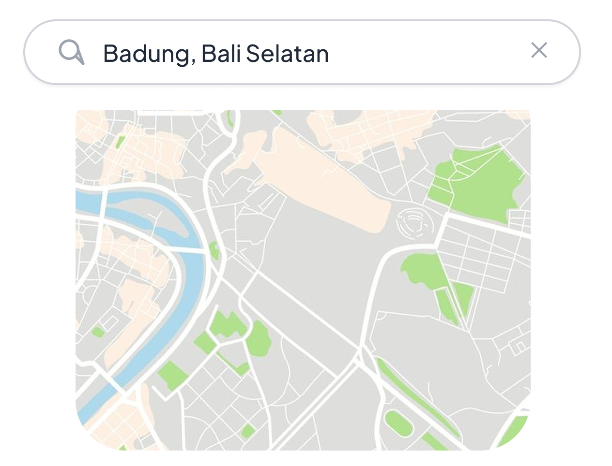
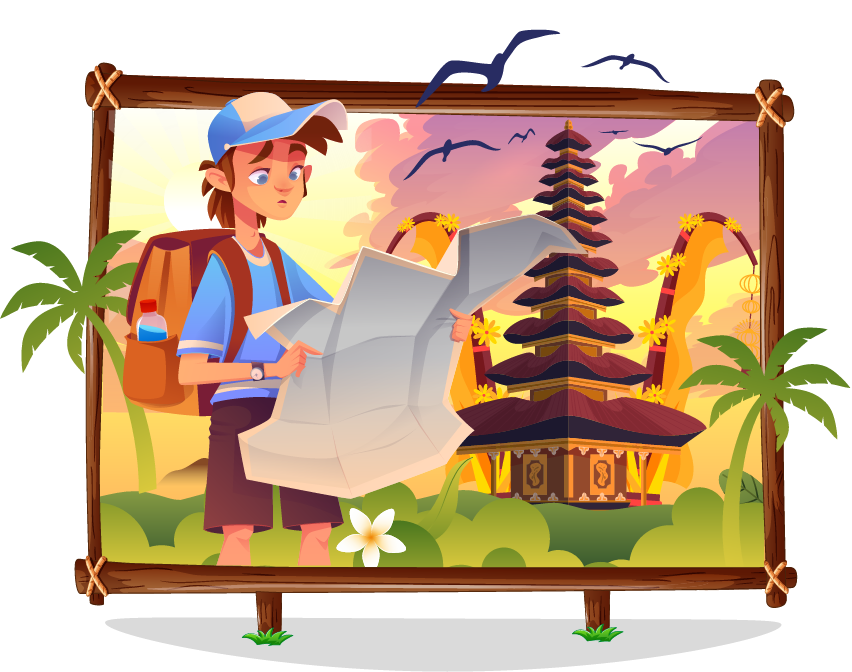
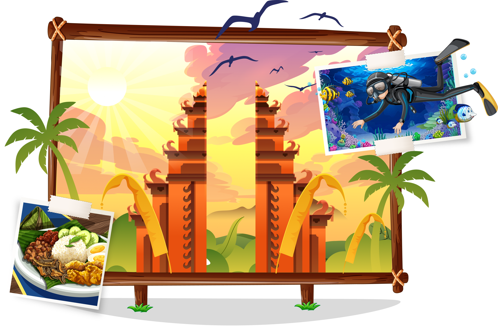
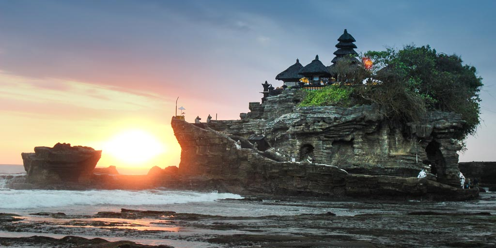
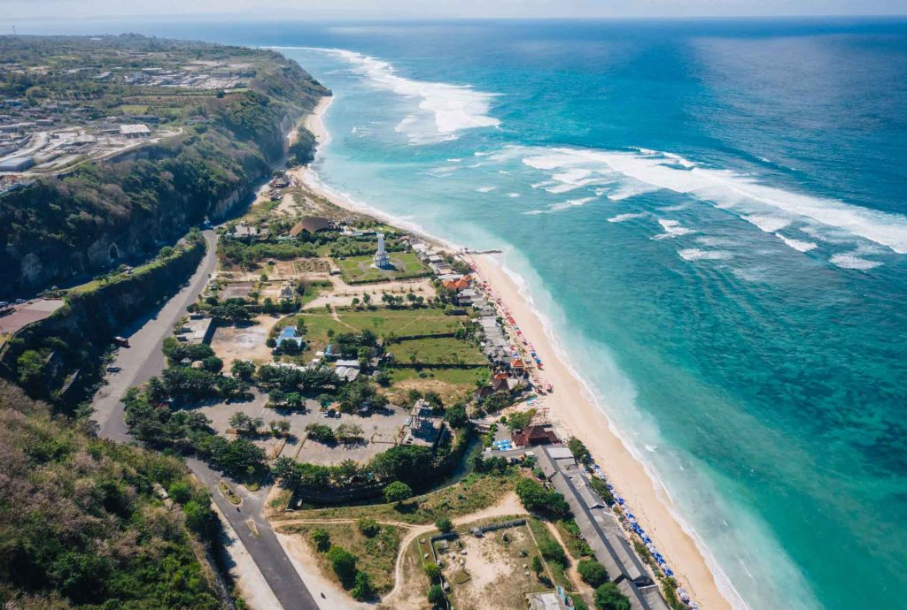
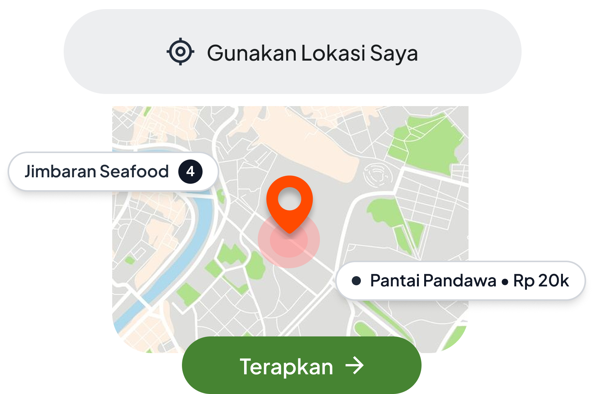
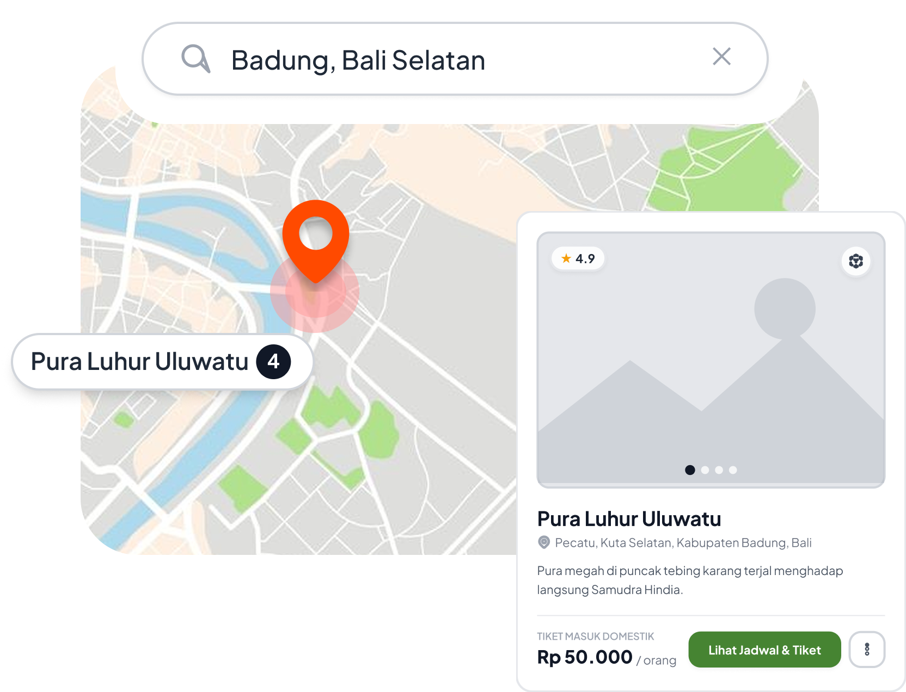
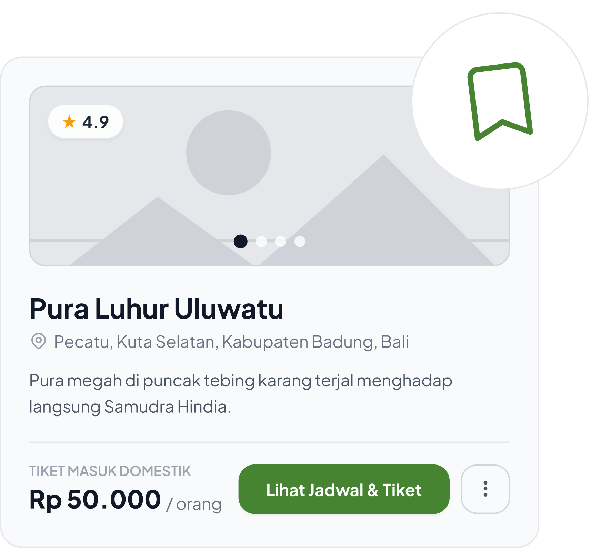
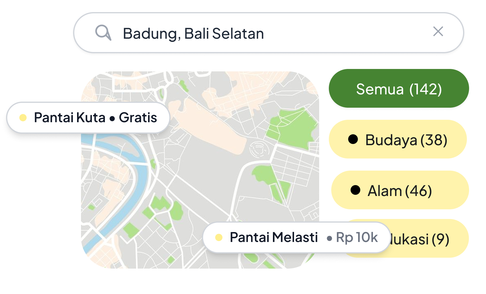

Wishlist
Simpan tempat wisata impianmu agar mudah menyusun rencana perjalanan.
Loading

Halaman yang Anda cari tidak ada.
Halo! Senang melihatmu kembali.
Silakan masuk ke akun Anda.
Belum punya akun?
Halo! Senang melihatmu kembali.
Silakan buat akun Anda.
Sudah punya akun?
Kami telah mengirimkan kode
verifikasi ke email anda.
Tidak menerima kode?
Masukkan email akun Anda.
Kami akan mengirimkan kode verifikasi untuk mengatur ulang kata sandi.
Buat kata sandi baru untuk akun Anda.
Minimal 8 karakter.
Temukan lebih dari 700 destinasi wisata impian dan susun rute perjalanan terbaikmu secara efisien bersama Langkah Baswara.
Langkah Baswara hadir sebagai sistem informasi geografis (Web-GIS) interaktif yang dirancang untuk membantu kamu merencanakan liburan. Dengan dukungan visualisasi peta interaktif, analisis radius lokasi, hingga sistem rekomandasi dan optimasi rute pintar, kamu bisa menikmati perjalanan liburan yang lebih efektif, hemat waktu, dan sesuai preferensi kamu.

Pilih kategori wisata (alam, budaya, umum) atau wilayah kabupaten yang ingin kamu kunjungi.
Manfaatkan fitur analisis radius (buffering) dan peta interaktif untuk melihat titik lokasi terdekat.
Dapatkan rekomendasi lokasi serta rute perjalanan teroptimasi untuk menghemat waktu dan biaya kamu.
Pura megah di tebing tinggi menghadap samudra dengan panorama matahari terbenam dan pertunjukan tari Kecak magis.

Ikon pura megah di atas bongkahan batu karang laut dengan panorama matahari terbenam yang memukau.
Hamparan sawah berundak hijau asri dengan sistem pengairan Subak tradisional yang menyejukkan di kawasan Ubud.
Pantai pasir putih legendaris dengan ombak bersahabat untuk peselancar pemula dan pusat keramaian pulau Bali.
Pura terapung anggun di tepi Danau Beratan dengan latar perbukitan Bedugul yang sejuk dan berkabut damai.

Pantai pasir putih tersembunyi di balik tebing kapur megah berhias pahatan patung lima ksatria Panca Pandawa.
Langkah Baswara adalah aplikasi Sistem Informasi Geografis pariwisata di Pulau Bali yang membantu wisatawan menemukan berbagai destinasi wisata di Bali.
Sistem kami memadukan data titik koordinat geospasial dengan algoritma rute terpadu untuk memberikan estimasi durasi dan jalur perjalanan paling efisien antar destinasi pilihan Anda.
Tentu! Anda dapat memfilter destinasi berdasarkan kategori Budaya, Alam, Rekreasi, serta memilih 9 Kabupaten/Kota di Bali langsung pada peta interaktif.
Ya, seluruh fitur eksplorasi peta, pencarian destinasi, filter kategori, hingga panduan wisata di Langkah Baswara dapat diakses 100% gratis oleh seluruh wisatawan.
Bersama Langkah Baswara, menuntun Langkahmu untuk Menjelajahi Keindahan Bali dengan Efisien dan Menyenangkan.
Bali memiliki lebih dari 700 destinasi wisata menakjubkan yang tersebar di berbagai wilayah. Namun, banyaknya pilihan tempat sering kali membuat bingung menyusun rencana perjalanan yang efisien, sehingga berisiko menghabiskan banyak waktu dan biaya di jalan.
Langkah Baswara hadir sebagai platform Web-GIS pintar yang dirancang untuk mempermudah perencanaan liburanmu. Kami bertujuan membantu wisatawan merencanakan perjalanan yang lebih praktis, hemat waktu, dan tepat sasaran sesuai preferensi pribadi.
Solusi lengkap dan pintar untuk membantu kamu menemukan serta menyusun alur perjalanan wisata terbaik di Pulau Bali.

Simpan tempat wisata impianmu agar mudah menyusun rencana perjalanan.

Cari dan temukanlah tempat-tempat seru yang lokasinya paling dekat dari posisi kamu.

Lihat dan jelajahi sebaran tempat wisata di Bali langsung lewat peta yang mudah digunakan.

Cari tempat wisata sesuai kategori favoritmu (alam, budaya, budget, pantai) atau berdasarkan lokasi kabupaten.

Klik titik di peta untuk melihat foto, deskripsi, dan info dari tempat yang dikunjungi.
Temukan tempat wisata favoritmu dan dapatkan rute perjalanan terbaik hanya dalam hitungan detik.
Dengar cerita dan pengalaman langsung dari para wisatawan yang telah merencanakan liburan impian mereka di Bali bersama Langkah Baswara.
"Fitur peta interaktifnya juara banget! Bikin kami nggak bingung milih rute jalan dan bisa hemat waktu 3 jam di perjalanan tanpa drama nyasar."
"Fitur peta interaktifnya juara banget! Bikin kami nggak bingung milih rute jalan dan bisa hemat waktu 3 jam di perjalanan tanpa drama nyasar."
"Fitur peta interaktifnya juara banget! Bikin kami nggak bingung milih rute jalan dan bisa hemat waktu 3 jam di perjalanan tanpa drama nyasar."
"Sistem pencarian cerdasnya ngebantu banget pilih objek wisata alam & budaya yang pas dengan budget backpacker kami. Sangat direkomendasikan!"
"Sistem pencarian cerdasnya ngebantu banget pilih objek wisata alam & budaya yang pas dengan budget backpacker kami. Sangat direkomendasikan!"
"Sistem pencarian cerdasnya ngebantu banget pilih objek wisata alam & budaya yang pas dengan budget backpacker kami. Sangat direkomendasikan!"
Daftar lokasi Web-GIS yang tersimpan dalam rencana perjalanan Bali Anda
Kuil tebing bertingkat megah dengan pemandangan Samudra Hindia lepas, tari Kecak saat matahari terbenam, dan zona konservasi monyet ekor panjang.
Pesisir pasir putih tenang berlatar tebing kapur kembar dramatis, ideal untuk wisata bahari ramah lingkungan dan upacara ritual Melasti.
Sistem irigasi tradisional Subak warisan dunia UNESCO, hamparan persawahan bertingkat nan sejuk dengan jalur trekking ramah ekosistem.
Belum ada destinasi tersimpan di kategori ini.